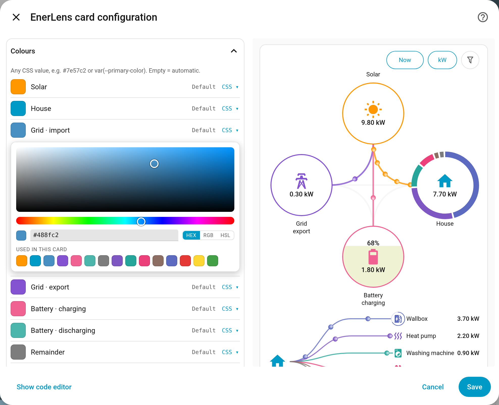
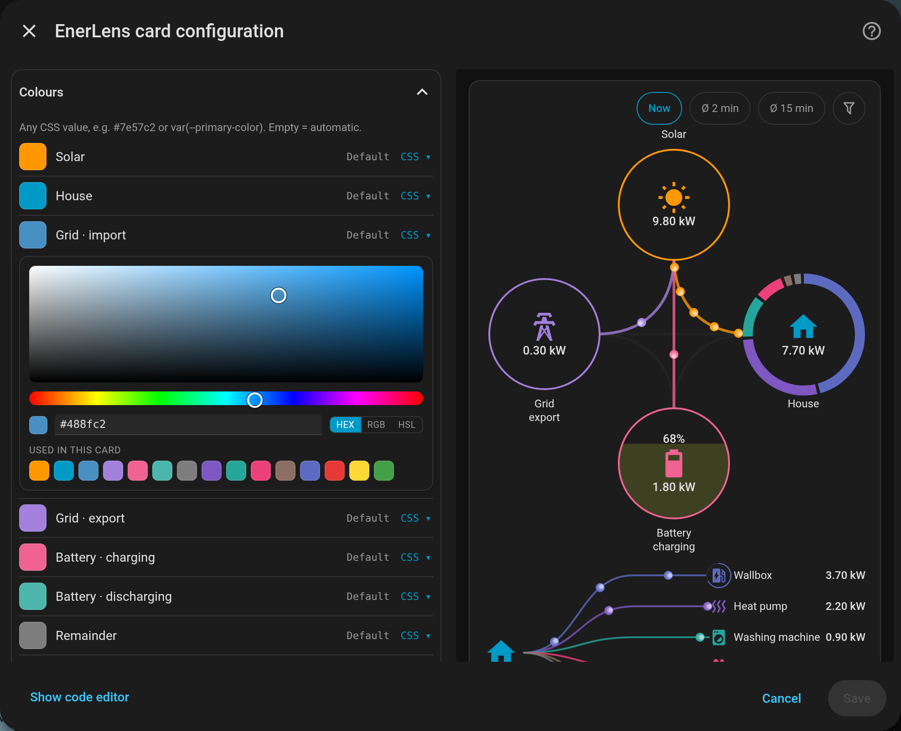

EnerLens Card
A highly configurable energy flow card for Home Assistant. Solar, grid, house and battery in five arrangements — plus, optionally, a breakdown of what the house figure and the PV shares are actually made of.
The card here is not a recording but the real card with invented values – try the switches above it and the quick buttons in its header.
What it does differently
Five arrangements. Solar, grid, house and battery stand in a cross, in one of two squares turned by 45° or in one of two triangles, with curved or straight lines. The lists move to their nodes: with Square · solar left the PV rows stand left of the drawing and the consumers right of it (see Arrangements).
Consumers are optional. If individual consumers are measured (a heat pump, say, or a device behind a Shelly), their entities can be added. The list beside the house node and the ring around it then show what makes up the house value. The remainder is the house value minus the visible consumers: it holds everything that is not measured individually, plus measured consumers that are below their threshold or pushed out by the limit right now.
Moving average. A live power diagram jumps by kilowatts within seconds. Alternatively the card shows moving averages — over 2 and 15 minutes by default, both configurable; one chip in the header steps through Now, Ø 2 min and Ø 15 min. They calm the picture down without falsifying the numbers. Clicking any element still opens Home Assistant’s own dialog with the real history; grid and battery with two sensors each show both directions together in one window.
Energy instead of power. At the tap of a button the card shows the energy of a period instead of the power: what came from the sun today, what the house used this week and how much went to the grid. The periods are today, 24 h, week, 7 days, month and 30 days. No energy sensors needed: the card adds up the statistics Home Assistant already keeps of the power sensors. Gaps in them are filled and marked by colour. List and ring then show which consumer had how much of it. Import and export, or charge and discharge, take one sensor per direction – if you only have a signed one, a helper splits it (see Energy over a period).
Quick buttons in the header. Up to four quick buttons switch the view with one tap: now or average, power or energy, the PV scale, short or full consumer list. Each one steps on with every tap or, expanded, shows all its values side by side. For all of them together there are three styles: Segment buttons, Segment buttons compact and Single buttons. Which values a quick button offers is up to you; with a single value it disappears and the card shows the same on every device. Every card remembers where it was left (see Quick buttons).
Segment buttons, stepping on:
Segment buttons, expanded:
Segment buttons compact, expanded:
Single buttons, expanded:
The consumer list sorts itself and glides. Rows reorder by power on a fixed beat and slide to their new position. A small filter button at the top shows every consumer on request, regardless of power — for tapping the history of a device that has just gone quiet. The remainder shrinks while it is on, because the consumers hidden so far get rows of their own. To see how much power belongs to no sensor at all, switch the filter off.
The ring follows along. When the order changes, its segments travel to
their new places and overtake on an inner lane — to be seen in every card on
this page. With ring.animation: fade they keep their places and blend their
colours.
The flow is yours to tune. The dots show the power: the more flows, the
faster and the more of them. When they start, how fast they get and how many
there can be are all settings — one knob, flow.peak_w, for all of it, or
threshold by threshold. On top come six dot designs, a single dot colour for
the whole card, and idle lines that can be dimmed or hidden. All of it is in
the editor too.
Extra values at the nodes. Each circle can show a second value - in the circle or right next to it, with a short prefix: today’s yield beside the solar power, the energy drawn from the grid today, a self-sufficiency rate at the house, the battery’s remaining energy. It can be any entity; the card shows it the way Home Assistant does and computes nothing itself. A node’s name and state word can be hidden. See Extra values at the nodes.
A grid outage is shown, provided the installation reports the grid status.
Narrow columns. When there is no room beside the cross — on a phone or in a
narrow dashboard column — the consumer list moves below it. With
list.always_below it stays there on wide screens too.
Set up in the editor. Almost everything is a click in the GUI editor, with the card live beside it — the colours too, with a picker that offers the ones the card already uses.
